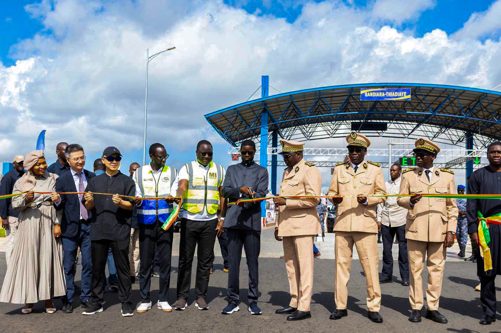

Le 22 août 2026, une page importante de l'histoire des infrastructures sénégalaises s'est écrite avec l'inauguration officielle de l'autoroute Mbour-Thiadiaye-Fatick-Kaolack. Cet ouvrage ambitieux, dont la patrouille et la brigade animaliere ont été confiées à MSA SERVICES, marque une étape décisive dans le désenclavement du bassin arachidier et le renforcement des corridors économiques du pays.
Une infrastructure au cœur du développement national
Cette nouvelle autoroute vient compléter le maillage routier stratégique du Sénégal en offrant un axe direct, sécurisé et moderne entre la Petite Côte touristique et les grandes villes agricoles du centre. Les temps de trajet vers Fatick et Kaolack sont considérablement réduits, ouvrant de nouvelles perspectives économiques pour les régions traversées.

Vue aérienne de l'autoroute Mbour-Thiadiaye-Fatick-Kaolack qui s'étend à travers le bassin arachidier.
Une cérémonie officielle mémorable
La cérémonie d'inauguration s'est tenue en présence de la lus haute autorité du pays, des représentants des collectivités territoriales, des partenaires techniques et financiers, ainsi que de nombreuses personnalités du monde économique. Les allocutions ont souligné l'importance stratégique de ce projet pour la mobilité, l'économie et l'intégration régionale.
Cet axe est plus qu'une autoroute : c'est une artère vitale qui va irriguer nos régions, créer de l'emploi et rapprocher les Sénégalais entre eux. MSA SERVICES est fier d'y contribuer par son expertise opérationnelle.
— Direction Générale, MSA SERVICES

Moment symbolique de la coupure de ruban officielle marquant l'ouverture au trafic.
Le dispositif MSA SERVICES : opérationnel dès l'ouverture
Dès la mise en service, nos équipes sont déployées sur l'ensemble du tracé pour garantir la sécurité et la fluidité du trafic. Le dispositif comprend :
- Patrouilles 24h/24 avec véhicules équipés positionnés à des points stratégiques
- Centre de répartition connecté aux services de secours et aux autorités
- Brigade animaliere pour le repérage, la signalisation et l'evacuation hors des voies
- Assistance usagersaccessible par téléphone à tout moment

Les équipes MSA SERVICES mobilisées pour garantir la sécurité et la fluidité du trafic.
Un impact économique et social majeur
Au-delà de l'aspect infrastructurel, cette autoroute est un formidable levier de développement. Elle facilite l'acheminement des produits agricoles vers les marchés urbains, favorise le tourisme intérieur, améliore l'accès aux services de santé et d'éducation, et crée des opportunités d'emplois directs et indirects tout au long du corridor.

Le trafic s'est rapidement adapté à cette nouvelle infrastructure moderne.
Un engagement de long terme
MSA SERVICES s'engage à assurer une exploitation exemplaire de cette autoroute, en cohérence avec les hauts standards qui ont fait sa réputation sur les autres infrastructures qu'elle gère : AIBD-Thiès-Touba, AIBD-Sindia-Mbour, Mbour-Thiadiaye et le Pont Nelson Mandela de Foundiougne. Cette nouvelle mission consolide notre position d'acteur de référence dans la gestion d'infrastructures stratégiques au Sénégal.
Bon à savoir
Pour toute urgence, question ou signalement d'incident sur l'autoroute Mbour-Thiadiaye-Fatick-Kaolack, notre centre de répartition est joignable 24h/24 au
+221 33 867 93 14.
Ensemble, poursuivons le chemin d'un Sénégal plus connecté, plus sûr, plus prospère.